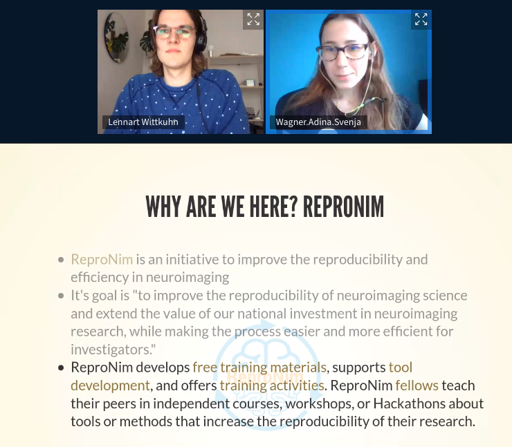
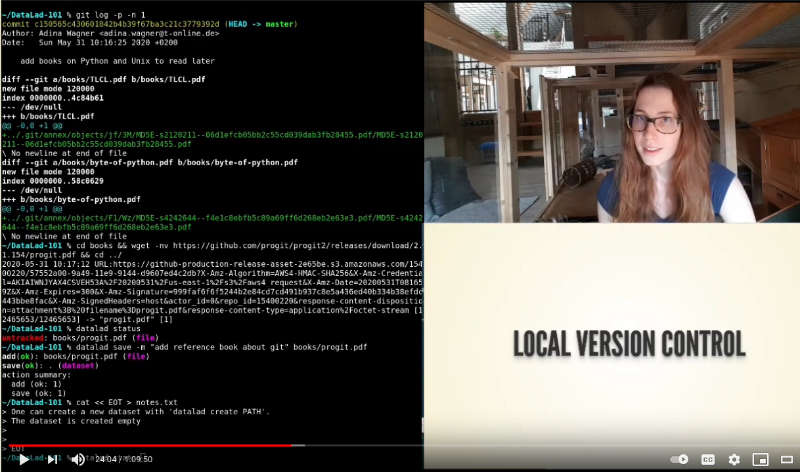
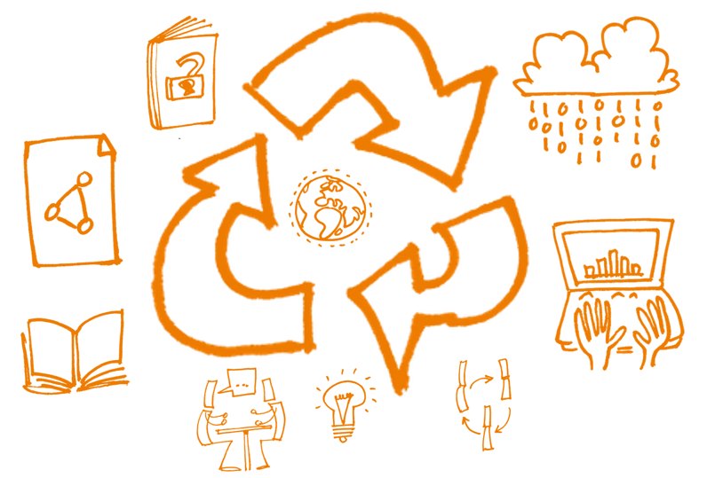
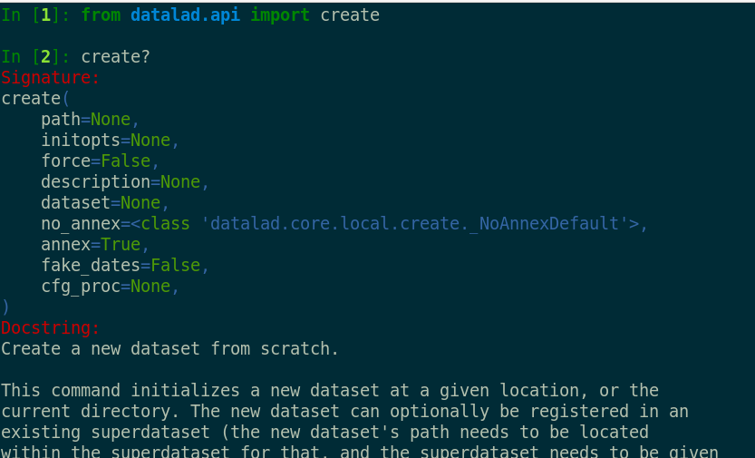
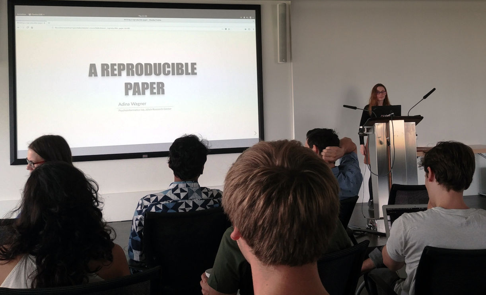
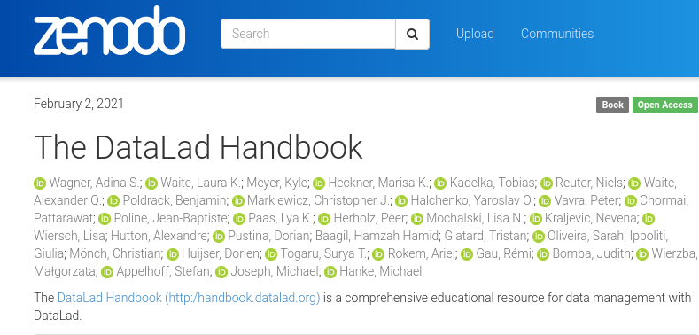

🧠💻
Educating and Training for a FAIR future
Adina Wagner
 @AdinaKrik
@AdinaKrik |
|
|
Psychoinformatics lab,
Institute of Neuroscience and Medicine, Brain & Behavior (INM-7) Research Center Jülich ReproNim/INCF fellow |
Slides: DOI 10.5281/zenodo.4541323 (Scan the QR code)
Sources: github.com/datalad-handbook/datalad-course
Training for a FAIR future in Neuroscience
| Neuroscience strives from interdisciplinarity and collaboration | ... but training groups with a diversity of skill sets is difficult |
 |
 |

|
 |
Research data management (RDM)

... typical difficulties
- Lack of formal training
- Rarely included in primary/graduate/post-graduate studies. Rather: Learning "on the job" and inheriting project management from the previous person
- "Science alone is hard already".
- RDM comes on top of everything else, in usually tight, competitive graduate programs or jobs
- Too much to know and too little guidance
- Rather than a motivational problem, young researchers face the difficulty of finding out which tools exist and are helpful
- Late RDM = little benefit
- If RDM is only incentivized, required, or tackled as the very last step, researchers can not benefit (fully) from RDM
Personal insights from RDM training

RDM overhaul in an institute |
User-focused software documentation |

|
 |
-
Aim: Researchers turn to RDM because it improves their science and work,
not because they are forced to
Training an institute

|

|
The DataLad Handbook
Its structure reflects different needs of different stakeholders in science: |
|
 |
|
 |
|
 |
|
Take Home Messages
- Complex software tools need accessible documentation
- Way to adoption of tools or principles via requirements/force/external incentives, or through immediate, personal benefits of good RDM (the latter keeps trainers sane)
-
A few Handbook metrics:
- Three Handbook releases
- 36 coauthors 
- 500 pages of content
- dozens of openly shared slides, code lists, and other training materials
- about 250 unique views per day
Acknowledgements